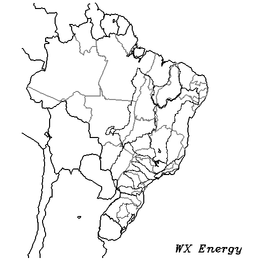

{% extends "base.html" %}

{% block head %}
    <link href="{{ url_for('static', filename='css/ena_diaria_bacia.css') }}" rel="stylesheet">
{% endblock %}

{% block title %}
	<title> ENA diária (bacia) </title>
{% endblock %}


{% block content %}
    <div id='enaDiariaBacia' class="wrapper">

        <nav id="sidebar" class="bg-wx-original-claro active">

            <div class="sidebar-header">
                <h3>Menu</h3>
            </div>

            <div class="row ml-2 mr-2">
                <div class="form-group col-sm">
                    <label for="data-rodada">Resultados CV</label>
                    <input class="form-control" type="date" id="data-rodada">
                </div>
            </div>

            <div class="row justify-content-md-center">
                <button type="button" id="" class="btn btn-light btn-atualizar">
                    <span>Atualizar</span>
                </button>

            </div>

            <ul id="listaFiltros" class="list-unstyled components ml-2">

                <li class='texto-centro'>Mapas</li>
                <li v-for="(valor, filtro) in tagsMapas">
                     <div class="checkbox">
                        <label><input type="checkbox" class="checkbox-filtros-pluvia mr-2" onchange='filtrarModelos(this)' v-bind:value="filtro" data-filtro-tipo='mapa' checked=true>[[filtro]] ([[valor]])</label>
                    </div>
                </li>

                <li class='texto-centro'>PDP</li>
                <li v-for="(valor, filtro) in tagsPdp">
                     <div class="checkbox">
                        <label><input type="checkbox" class="checkbox-filtros-pluvia mr-2" onchange='filtrarModelos(this)' v-bind:value="filtro" data-filtro-tipo='pdp' checked=true>[[filtro]] ([[valor]])</label>
                    </div>
                </li>

                <li class='texto-centro'>Rodada</li>
                <li v-for="(valor, filtro) in tagsRodadas">
                     <div class="checkbox">
                        <label><input type="checkbox" class="checkbox-filtros-pluvia mr-2" onchange='filtrarModelos(this)' v-bind:value="filtro" data-filtro-tipo='rodada' checked=true>[[filtro]] ([[valor]])</label>
                    </div>
                </li>

                <li class='texto-centro'>Preliminar</li>
                <li v-for="(valor, filtro) in tagsPreliminar">
                     <div class="checkbox">
                        <label><input type="checkbox" class="checkbox-filtros-pluvia mr-2" onchange='filtrarModelos(this)' v-bind:value="filtro" data-filtro-tipo='preliminar' checked=true>[[filtro]] ([[valor]])</label>
                    </div>
                </li>

                <hr>

                <li class='texto-centro'>Início do historico</li>
                <div class="row ml-2 mr-2">
                    <div class="form-group col-sm">
                        <label for="data-inicio-historico"></label>
                        <input class="form-control" type="date" id="data-inicio-historico">
                    </div>
                </div>

                <li>
                    <div class="row justify-content-md-center">
                        <button type="button" id="" class="btn btn-light btn-atualizar">
                            <span>Atualizar</span>
                        </button>

                    </div>
                </li>

                <hr>

                <div class="row justify-content-md-center">
                    <button type="button" class="btn btn-light" data-toggle="modal" data-target="#modalMapaAcumulados">
                      Mapa acumulados
                    </button>
                </div>


            </ul>

        </nav>

        <div id="content">

            <nav class="navbar navbar-expand-lg navbar-light bg-light">
                <div class="container-fluid">

                    <button type="button" id="sidebarCollapse" class="btn bg-wx-original-claro">
                        <i class="fas fa-align-left"></i>
                        <span>Menu</span>
                    </button>

                    <button type="button" class="btn bg-wx-original-claro" id='btn_comutarLegenda'>ON/Off Legenda</button>

                </div>
            </nav>

            <div class="jumbotron jumbotron-fluid">
              <div class="container">
                <h3>Previsão de ENA diária subdividida por bacias</h3>
                <p class="lead">Os resultados são compostos apenas por SMAP WX.</p>
              </div>
            </div>

            <div class="row text-center" id='graphs_bacia_smap'>
            </div>

            <!-- Botao para oo topo da pagina -->
            <a id="back-to-top" href="#" class="btn bg-wx-original-medio btn-lg back-to-top" role="button" title="Click aqui para retornar no topo da pagina" data-toggle="tooltip" data-placement="left"><span class="material-icons">keyboard_arrow_up</span></a>

            <!-- Modal para mostrar os mapas de acumulados semanais de chuva -->
            <div class="modal fade" id="modalMapaAcumulados" tabindex="-1" aria-labelledby="tituloModalMapasAcumuladas" aria-hidden="true">
              <div class="modal-dialog  modal-lg">
                <div class="modal-content">
                  <div class="modal-header">
                    <h5 class="modal-title" id="tituloModalMapasAcumuladas">Acumulados semanais</h5>
                    <button type="button" class="close" data-dismiss="modal" aria-label="Close">
                      <span aria-hidden="true">&times;</span>
                    </button>
                  </div>
                  <div class="modal-body" style="display:table-cell; vertical-align:middle; text-align:center">

                    <div class="row">

                        <div class="col">
                            <p>Modelo:</p>
                            <select class="custom-select custom-select-sm" id="select-modelo-mapa">
                              <option value="gfs">GFS</option>
                              <option value="gefs">GEFS</option>
                              <option value="ecmwf-orig">ECMWF</option>
                              <option value="belgingur">TOK-a</option>
                              <option value="belgingur_tok30">TOK-30</option>


                              <!-- <option value="ECMWF ensemble">ECMWF ensemble</option> -->
                              <option value="ECMWF-ens-Estendido">ECMWF-ens Estendido (Tempo Ok)</option>
                              <option value="GEFS+ETA-ONS">GEFS + ETA-ONS</option>
                              <option value="ETA-ONS">ETA-ONS</option>
                              <option value="TOK-b5d">TOK-b5d</option>
                              <option value="TOK-b">TOK-b</option>
                            </select>
                        </div>

<!--                         <div class="col ml-auto">
                            <button type="button" class="btn btn-secondary mt-5" data-toggle="tooltip" data-placement="bottom" title="Utilize as setas para alterar as rodadas e as semanas!">?</button>
                        </div> -->
                    </div>

                    
                  </div>
                  <div class="modal-footer">
                  </div>
                </div>
              </div>
            </div>

            <!-- Dark Overlay element -->
            <div class="overlay"></div>
        </div>
    </div>

{% endblock %}


{% block scripts %}

 <script>

    var dtRodadaCV
    var dtInicioHistorico
    var dtFimHistorico

    var desabitarListener = false
    var mostrar_legendas = true
    var subm_aux = {'N':'NORTE', 'NE':'NORDESTE', 'S':'SUL', 'SE':'SUDESTE'}
    var bacia_aux = {'GRANDE':'GRANDE', 'PARANAÍBA':'PARANAÍBA', 'ALTO TIETÊ':'ALTO TIETÊ', 'TIETÊ':'TIETÊ', 'PARANAPANEMA':'PARANAPANEMA',  'ALTO PARANÁ':'ALTO PARANÁ', 'BAIXO PARANÁ':'BAIXO PARANÁ', 'INCREMENTAL DE ITAIPU':'INCREMENTAL DE ITAIPU', 'SÃO FRANCISCO (SE)':'SÃO FRANCISCO (SUDESTE)', 'TOCANTINS (SE)':'TOCANTINS (SUDESTE)', 'IGUAÇU':'IGUAÇU', 'URUGUAI':'URUGUAI', 'PARANAPANEMA (S)':'PARANAPANEMA (SUL)', 'JACUÍ':'JACUÍ', 'CAPIVARI':'CAPIVARI', 'ITAJAÍ-AÇU':'ITAJAÍ-AÇU', 'SÃO FRANCISCO (NE)':'SÃO FRANCISCO (NORDESTE) ', 'TOCANTINS (N)':'TOCANTINS (NORTE)'}
    var tags = []
    var curvas = {}
    var charts = {}
    var dt_rodadas = ''
    var datasetCache = {}

    var timeFormat = 'DD/MM/YYYY';


    for (bacia in bacia_aux){
        datasetCache[bacia] = []
    }


        cores = {}
    // Cores distintas
    cores['PRECMEDIA'] = ['rgba(0,0,255,1.0)', 'rgba(0,0,255,0.9)', 'rgba(0,0,255,0.8)', 'rgba(0,0,255,0.7)', 'rgba(0,0,255,0.5)', 'rgba(0,0,255,0.3)']
    cores['PCONJUNTO'] = ['rgba(0,0,255,1.0)', 'rgba(0,0,255,0.9)', 'rgba(0,0,255,0.8)', 'rgba(0,0,255,0.7)', 'rgba(0,0,255,0.5)', 'rgba(0,0,255,0.3)']
    cores['GEFS'] = ['rgba(46,139,87,1.0)', 'rgba(46,139,87,0.9)', 'rgba(46,139,87,0.8)', 'rgba(46,139,87,0.7)', 'rgba(46,139,87,0.5)', 'rgba(46,139,87,0.3)']
    cores['GFS'] = ['rgba(218,165,32,1.0)', 'rgba(218,165,32,0.9)', 'rgba(218,165,32,0.8)', 'rgba(218,165,32,0.7)', 'rgba(218,165,32,0.5)', 'rgba(218,165,32,0.3)'] 
    cores['PZERADA'] = ['rgba(242,9,9,1.0)', 'rgba(242,9,9,0.9)', 'rgba(242,9,9,0.8)', 'rgba(242,9,9,0.7)', 'rgba(242,9,9,0.5)', 'rgba(242,9,9,0.3)'] 
    cores['EC'] = ['rgba(0,255,0,1.0)', 'rgba(0,255,0,0.9)', 'rgba(0,255,0,0.8)', 'rgba(0,255,0,0.7)', 'rgba(0,255,0,0.5)', 'rgba(0,255,0,0.3)'] 
    cores['ETA40'] = ['rgba(255,0,255,1.0)', 'rgba(255,0,255,0.9)', 'rgba(255,0,255,0.8)', 'rgba(255,0,255,0.7)', 'rgba(255,0,255,0.5)', 'rgba(255,0,255,0.3)'] 
    cores['ECMWF-tok'] = ['rgba(129,214,0,1)', 'rgba(129,214,0,0.9)', 'rgba(129,214,0,0.8)', 'rgba(129,214,0,0.7)', 'rgba(129,214,0,0.5)', 'rgba(129,214,0,0.3)'] 
    cores['EC-ens'] = ['rgba(224,107,11.0)', 'rgba(224,107,11,0.9)', 'rgba(224,107,11,0.8)', 'rgba(224,107,11,0.7)', 'rgba(224,107,11,0.5)', 'rgba(224,107,11,0.3)'] 

    // Somente preciptacao
    cores['ETA-ONS'] = ['#ff00ff']  //equivalente ao Eta40
    cores['ETA_GEFS'] = ['#0000ff'] //PCONJUNTO
    cores['ECMWF'] = ['#00ff00']    //equivalente ao EC

    // Configuracoes para abortar todas as requisiçoes quando o usuario pedir para atualizar
    $.xhrPool = [];
    $.xhrPool.abortAll = function() {
        $(this).each(function(idx, jqXHR) {
            jqXHR.abort();
        });
        $(this).each(function(idx, jqXHR) {
            var index = $.inArray(jqXHR, $.xhrPool);
            if (index > -1) {
                $.xhrPool.splice(index, 1);
            }
        });
    };

    $.ajaxSetup({
        beforeSend: function(jqXHR) {
            $.xhrPool.push(jqXHR);
        },
        complete: function(jqXHR) {
            var index = $.inArray(jqXHR, $.xhrPool);
            if (index > -1) {
                $.xhrPool.splice(index, 1);
            }
        }
    });

    $(document).ready(function(){
         $(window).scroll(function () {
                if ($(this).scrollTop() > 50) {
                    $('#back-to-top').fadeIn();
                } else {
                    $('#back-to-top').fadeOut();
                }
            });
            // scroll body to 0px on click
            $('#back-to-top').click(function () {
                $('#back-to-top').tooltip('hide');
                $('body,html').animate({
                    scrollTop: 0
                }, 800);
                return false;
            });
            
            $('#back-to-top').tooltip('show');

    });

    $(window).on('load', function(){

        parametros = window.location.search;
        urlParams = new URLSearchParams(parametros);

        dtRodadaCV = moment()
        dtInicioHistorico = moment()
        dtInicioHistorico = dtInicioHistorico.subtract(30, "days");


        if(urlParams.get('rodadaCv') != null){
            dtRodadaCV = moment(urlParams.get('rodadaCv'), "YYYY-MM-DD")
            str_dtRodadaCV = dtRodadaCV.format("YYYY-MM-DD")
        } else{
            str_dtRodadaCV = dtRodadaCV.format("YYYY-MM-DD")
        }

        if(urlParams.get('inicioHistorico') != null){
            dtInicioHistorico = moment(urlParams.get('inicioHistorico'), "YYYY-MM-DD")
            str_dtInicioHistorico = dtInicioHistorico.format("YYYY-MM-DD")
        } else{
            str_dtInicioHistorico = dtInicioHistorico.format("YYYY-MM-DD")
        }

        document.getElementById("data-rodada").value = str_dtRodadaCV
        document.getElementById("data-inicio-historico").value = str_dtInicioHistorico

        let dataProximaRevisao = dataProximaRev_moment(dtRodadaCV)
        let inicioMesEletProxRev = inicioMesEletrico_moment(dataProximaRevisao)
        dtFimHistorico = inicioMesEletProxRev.add(6*7 , 'days')


        // Desabilita a legenda dos graficos de acordo com o tamanho das telas
        largura_pagina = screen.width
        if (largura_pagina <= 1000){
            mostrar_legendas = false
        }

        // Criação dos canvas para os graficos
        span_graph = document.getElementById("graphs_bacia_smap")
        for (bacia in bacia_aux){
            let div_aux = document.createElement("div");
            div_aux.classList = "col-12 col-sm-12 col-md-12 col-lg-12 col-xl-9 mt-3 center"
            let canvas_aux = document.createElement("canvas");
            canvas_aux.id = "chart " + bacia

            div_aux.appendChild(canvas_aux);
            span_graph.appendChild(div_aux);
        }


        // Criação e configuracao dos graficos
        for (bacia in bacia_aux){
            var ctx = document.getElementById("chart "+bacia).getContext("2d");

            charts[bacia] = new Chart(ctx, {
                type: 'bar',
                options: {
                    title: {
                      display: true,
                      text: bacia_aux[bacia],
                    },
                    legend: {
                      display: mostrar_legendas,
                      position: 'bottom'
                    },
                    tooltips: {
                      mode: 'x'
                    },

                    scales: {
                        xAxes: [{
                            type: 'time',
                            time: {
                                unit: 'week',
                                parser: timeFormat,
                            },
                            scaleLabel: {
                                display: true,
                                labelString: 'Data'
                            }
                        }],
                        yAxes: [
                        {
                            id: 'eixo_enas',
                            type: 'linear',
                            position: 'left',
                            scaleLabel: {
                                display: true,
                                labelString: 'ENA'
                            }
                        }
                        , 
                        {
                            id: 'eixo_prec',
                            type: 'linear',
                            position: 'right',
                            ticks: {
                              reverse: true,
                              max: 100,
                              min: 0
                                },
                            scaleLabel: {
                                display: true,
                                labelString: 'Precipitação'
                                },
                            gridLines: {
                                color: "rgba(0, 0, 0, 0)",
                            }
                        }
                        ]
                    },
                    // animation: {
                    //     duration: 0
                    // }
                }
            })
        }

        // update os graficos para a data de hoje
        iniciarListeners()
        atualizarTodasCurvas()

     })


    function iniciarListeners(){
        $('.btn-atualizar').click(atualizarValores);
        $('#sidebarCollapse').on('click', function () {
            $('#sidebar').toggleClass('active');
        });
        $('#btn_comutarLegenda').click(comutarLegenda);
        $('#modalMapaAcumulados').on('show.bs.modal', ativarListenerModal)
        $('#modalMapaAcumulados').on('hide.bs.modal', desativarListenerModal)
        $(document).keydown(function(event){
            keyPressionada(event);
        })
        $("#select-modelo-mapa").change(ativarListenerModal)
    }

    function atualizarTodasCurvas(){
        // atualizarRodadasCv(document.getElementById("data-rodada").value)
        // plotAcomph()
        // plotRev()
        // plotPreciptacao()
        // plotMerge()
    }

    function atualizarValores(){

        if ((document.getElementById("data-rodada").value != dtRodadaCV.format('YYYY-MM-DD')) || (document.getElementById("data-inicio-historico").value != dtInicioHistorico.format('YYYY-MM-DD'))){
            
            dtRodadaCV = moment(document.getElementById("data-rodada").value)
            dtInicioHistorico = moment(document.getElementById("data-inicio-historico").value)

            filtroObj.ena = []
            filtroObj.filtros = []

            // Mudança na url (retirada dos parametros)
            window.history.replaceState("object or string", "ENA diária (submercado)", "/ena_diaria_submercado");
            // Remove os parametros armazenados nas variaveis
            for(var key of urlParams.keys()) { 
              urlParams.delete(key)
            }

            const url = new URL(window.location);
            url.search = '?' + urlParams.toString()
            window.history.pushState({}, '', url);

            $.xhrPool.abortAll()
            atualizarTodasCurvas()
        }
    }

    // function atualizarValores(){

    //     // Mudança na url (retirada dos parametros)
    //     window.history.replaceState("object or string", "ENA diária (bacia)", "/ena_diaria_bacia");
    //     // Remove os parametros armazenados nas variaveis
    //     for(var key of urlParams.keys()) { 
    //       urlParams.delete(key)
    //     }
        
    //     if (document.getElementById("data-rodada").value != dt_rodadas){
    //         $.xhrPool.abortAll()
    //         requestRodadas(document.getElementById("data-rodada").value)
    //         return
    //     }

    // }


    function atualizarRodadasCv(data) {

        dt_rodadas = data

        // Limpeza do grafico
        for (bacia in bacia_aux){
            charts[bacia].data.datasets = []
            charts[bacia].update();
        }


        // A data devera vir no seguinte formato YYY-MM-DD
        $.ajax({
             url: "/API/database/get/rodadasDiaSmap",
             type : 'get',
             data: {'data': data}
        })
        .done(function(resposta){
            for (modelo in resposta){
                console.log(`Modelo: ${resposta[modelo].modelo}; Preliminar: ${resposta[modelo].preliminar}; Rodada: ${resposta[modelo].rodada}; Pdp: ${resposta[modelo].pdp}`)
                if(urlParams.get('modelos') != null){
                    if(!urlParams.get('modelos').split(',').includes(resposta[modelo].modelo)){
                        continue
                    }
                }
                if(urlParams.get('rodada') != null){
                    if(!urlParams.get('rodada').split(',').includes(resposta[modelo].rodada.toString())){
                        continue
                    }
                }
                if(urlParams.get('preliminar') != null){
                    if(!urlParams.get('preliminar').split(',').includes(resposta[modelo].preliminar.toString())){
                        continue
                    }
                }
                if(urlParams.get('pdp') != null){
                    if(!urlParams.get('pdp').includes(resposta[modelo].pdp.toString())){
                        continue
                    }
                }
                num_modelo = resposta[modelo].modelo             
                $.ajax({
                     url: "/API/database/get/rodadasEspecificaSmap",
                     type : 'get',
                     data: {'data': data, 'modelo':resposta[modelo].modelo, 'preliminar':resposta[modelo].preliminar, 'rodada':resposta[modelo].rodada, 'pdp':resposta[modelo].pdp}
                })
                .done(function(resposta){
                    var _meta = resposta['_meta']
                    var ena = {}

                    for (data in resposta['ena']){
                        dt = new Date(data)
                        for (bacia in resposta['ena'][data]){

                            if (ena[bacia] == undefined){
                                ena[bacia] = []
                            }

                            ena[bacia].push({t:dt, y:resposta['ena'][data][bacia].toFixed(2)})
                        }
                    }

                    v_filtro.addTags(_meta)

                    var nome_modelo = _meta['mapa']

                    // Tonalidade da cor das curvas
                    tom_cor = 0
                    if (_meta['preliminar']){
                        tom_cor += 2
                    }
                    tom_cor += Number(_meta['rodada'])/6

                    // Objeto de data com o valor de 1 semana apos a ultima semana da rodada 'queried' 
                    lst_date = new Date(dt)
                    lst_date.setDate(lst_date.getDate()+1)

                    for (bacia in bacia_aux){

                        bacia_str = bacia_aux[bacia]

                        // Adicao de uma semana a mais para mostrar o degrau do grafico 'step' 
                        ena[bacia].push({t:new Date(lst_date), y:ena[bacia][ena[bacia].length-1].y})


                        if (cores[nome_modelo] == undefined){
                            cores[nome_modelo] = ramdomColor()
                            cor_curva = cores[nome_modelo][tom_cor]
                            console.log(nome_modelo + ' não cadastrada no dicionario de cores, sera sorteado uma cor para este modelo!')
                        }
                        else {
                            cor_curva = cores[nome_modelo][tom_cor]
                        }


                        newDataset = {
                            label: _meta['label'],
                            type: 'line',
                            backgroundColor: cor_curva,
                            borderColor: cor_curva,
                            fill: false,
                            data: ena[bacia],
                        }

                        charts[bacia].data.datasets.push(newDataset);
                        charts[bacia].update();
                    }
                })
            }
        })

    }

    function plotAcomph(){

        dataInicioAcomph = dtInicioHistorico.format("DD/MM/YYYY");
        $.ajax({
             url: "/API/getEnaAcomph",
             type : 'get',
             data:  {'divisao':'bacia', 'dataInicial':dataInicioAcomph}
        })
        .done(function(resposta){

            for (let bacia in resposta){
                if (charts[bacia] != undefined){
                    let acomphBacia = []
                    for (let data in resposta[bacia]){
                        let dt = new Date(data)
                        acomphBacia.push({t:dt, y:resposta[bacia][data].toFixed(2)})
                    }

                    // bacia_str = bacia_aux[bacia]
                    newDataset = {
                        label: 'ACOMPH',
                        type: 'line',
                        backgroundColor: 'rgba(6, 187, 199)',
                        borderColor: 'rgba(6, 187, 199)',
                        fill: false,
                        data: acomphBacia,
                        yAxisID: 'eixo_enas',
                        pointRadius: 2,
                        borderWidth: 2
                    }

                    charts[bacia].data.datasets.push(newDataset);
                    charts[bacia].update();
                }
            }
        })
   }


   function plotRev(){

        dataInicioAcomph = dtInicioHistorico.format("DD/MM/YYYY");
        $.ajax({
             url: "/API/getrevbacias",
             type : 'get',
             data:  {'dataInicial':dataInicioAcomph}
        })
        .done(function(resposta){

        for (let bacia in resposta['ena']){
            if (charts[bacia] != undefined){
                let ena = []
                for (let data in resposta['ena'][bacia]){
                    let dt = new Date(data)
                    ena.push({t:dt, y:resposta['ena'][bacia][data].toFixed(2)})
                }

                datasetRev = {
                    label: 'REV'+resposta['revisao'],
                    type: 'line',
                    backgroundColor: 'rgba(106,90,205)',
                    borderColor: 'rgba(106,90,205)',
                    fill: false,
                    data: ena,
                    steppedLine: 'true'
                }
                charts[bacia].data.datasets.push(datasetRev);
            }

        }

            for (let bacia in resposta['mlt']){
                if (charts[bacia] != undefined){
                    let mlt = []
                    for (let data in resposta['mlt'][bacia]){
                        let dt = new Date(data)
                        mlt.push({t:dt, y:resposta['mlt'][bacia][data].toFixed(2)})
                    }

                    datasetMlt = {
                        label: 'MLT',
                        type: 'line',
                        backgroundColor: 'rgba(14,0,0)',
                        borderColor: 'rgba(14,0,0)',
                        fill: false,
                        data: mlt,
                        steppedLine: 'true',
                        yAxisID: 'eixo_enas',
                        pointRadius: 2,
                        borderWidth: 1
                    }

                    charts[bacia].data.datasets.push(datasetMlt);
                    charts[bacia].update();

                }
            }
        })
    }

   function plotPreciptacao(){

     let modelos = {3:'ETA-ONS', 21:'ETA_GEFS', 1:'GFS', 13:'GEFS', 22:'ECMWF-tok', 23:'ECMWF'}

    // dtInicioPrec = dtInicioHistorico.format("DD/MM/YYYY");
    dtInicioPrec = moment().add(1, "days").format("DD/MM/YYYY");

    
     for (let modelo in modelos){

        $.ajax({
             url: "/API/getmodelprecbacias",
             type : 'get',
             data: {'codigoModelo': modelo, 'dataInicial': dtInicioPrec}
        })
        .done(function(resposta){

            for (let bacia in resposta){
                if (charts[bacia] != undefined){
                    let prec = []
                    for (let data in resposta[bacia]){
                        let dt = new Date(data)
                        prec.push({t:dt, y:resposta[bacia][data].toFixed(2)})
                    }

                    let tom_cor = 0
                     if (cores[modelos[modelo]] == undefined){
                         cores[modelos[modelo]] = ramdomColor()
                         cor_curva = cores[modelos[modelo]][tom_cor]
                         console.log(modelos[modelo] + ' não cadastrada no dicionario de cores, sera sorteado uma cor para este modelo!')
                     }
                     else {
                         cor_curva = cores[modelos[modelo]][tom_cor]
                     }

                    let label = modelos[modelo] + '(prec)'
                    dataset = {
                        label: label,
                        type: 'line',
                        backgroundColor: cor_curva,
                        borderColor: cor_curva,
                        fill: false,
                        data: prec,
                        steppedLine: 'true',
                        yAxisID: 'eixo_prec',
                        type: 'bar'
                    }
                    charts[bacia].data.datasets.push(dataset);
                    charts[bacia].update();
                }
            }

        })

     }
   }

   function plotMerge(){

       dataInicioMerge = dtInicioHistorico.format("DD/MM/YYYY");
       
       $.ajax({
           url: "/API/getmodelprecbacias",
           type : 'get',
           data: {'codigoModelo': '5', 'dataInicial': dataInicioMerge}
       })
       .done(function(resposta){

            for (let bacia in resposta){
                if (charts[bacia] != undefined){
                    let prec = []
                    for (let data in resposta[bacia]){
                        let dt = new Date(data)
                        prec.push({t:dt, y:resposta[bacia][data].toFixed(2)})
                    }

                    dataset = {
                        label: 'MERGE',
                        type: 'line',
                        backgroundColor: '#5E92CE',
                        borderColor: '#5E92CE',
                        fill: false,
                        data: prec,
                        steppedLine: 'true',
                        yAxisID: 'eixo_prec',
                        type: 'bar'
                    }
                    charts[bacia].data.datasets.push(dataset);
                    charts[bacia].update();
                }
            }
        })
   }


    function filtrarModelos(elm){

        if (elm.checked){

            // lista completa de todas curvas que nao serao mostradas
            var listaCompleta = []
            $(".checkbox-filtros-pluvia:checkbox:not(:checked)").each(function( index ) {
                let valor = $( this ).val()
                let tag = $( this ).data('filtro-tipo')
                let curvasFiltradas = v_filtro.filterByTag(tag, valor)
                let labelsCurvasFiltradas = curvasFiltradas.map(a => a.label);
                listaCompleta = listaCompleta.concat(labelsCurvasFiltradas);
            });

            for (let bacia in charts){
                charts[bacia].data.datasets = charts[bacia].data.datasets.concat(datasetCache[bacia])
                datasetCache[bacia] = []
                var datasetIndex = charts[bacia].data.datasets.length
                while (datasetIndex--) {
                    labelDataset = charts[bacia].data.datasets[datasetIndex].label
                    if (listaCompleta.includes(labelDataset)){
                        datasetCache[bacia].push(charts[bacia].data.datasets[datasetIndex])
                        charts[bacia].data.datasets.splice(datasetIndex,1)
                    }
                }
                charts[bacia].update()
            }

        }
        else{
            
            let valor = elm.value
            let tag = elm.getAttribute('data-filtro-tipo')

            let curvasFiltradas = v_filtro.filterByTag(tag, valor)
            let labelsCurvasFiltradas = curvasFiltradas.map(a => a.label);

            for (let bacia in charts){
                var datasetIndex = charts[bacia].data.datasets.length
                while (datasetIndex--) {
                    labelDataset = charts[bacia].data.datasets[datasetIndex].label
                    if (labelsCurvasFiltradas.includes(labelDataset)){
                        datasetCache[bacia].push(charts[bacia].data.datasets[datasetIndex])
                        charts[bacia].data.datasets.splice(datasetIndex,1)
                    }
                }
                charts[bacia].update()
            }
        }
    }


    function windowResize() {
        largura_pagina = screen.width
        console.log(largura_pagina)
        if (largura_pagina <= 1000){
            mostrar_legendas = false;
        }

        for (subm in charts){
            charts[subm].options.legend.display = mostrar_legendas;
            charts[sub].update();
        }
    }

    function comutarLegenda(){
        for (subm in charts){
            charts[subm].options.legend.display = !charts[subm].options.legend.display
            charts[subm].update();
        }
    }

    function ramdomColor(){
        int1 = Math.floor(255 * Math.random())
        int2 = Math.floor(255 * Math.random())
        int3 = Math.floor(255 * Math.random())

        str_defalt = 'rgba(' + int1 + ',' + int2 + ',' + int3 + ','


        lst_cores = [str_defalt+'1)', str_defalt+'0.9)', str_defalt+'0.8)', str_defalt+'0.7)', str_defalt+'0.5)', str_defalt+'0.3)']

        return lst_cores
    }

    function zfill(num, len) {
        return (Array(len).join("0") + num).slice(-len);
    }

    function keyPressionada(e){
        console.log(e.which)
        if (listenerKeyAtivado){

            e.preventDefault();

            if(e.which === 37 & semana > 1){
                semana -= 1;
            }
            else if(e.which === 38 & horario<18){
                horario += delayEntreRodadas
            }
            else if(e.which === 39 & semana < maxSemanasPrevistas){
                semana += 1;
            }
            else if(e.which === 40 & horario>0){
                horario -= delayEntreRodadas
            }
            document.getElementById("mapa-chuva-acumulado").src = `http://wxclima.ddns-intelbras.com.br:8180/WX2TB/Documentos/saidas-modelos/${modeloMapaAcumulado}/${dtRodadaCV.format('YYYYMMDD')}${zfill(horario, 2)}/semana-energ/${semana}semana_energ-${prefixoDataArquivo}${dtRodadaCV.format('YYYYMMDD')}${zfill(horario, 2)}${sufixoDataArquivo}.gif`;
            // document.getElementById("mapa-chuva-acumulado").src = `http://wxclima.ddns-intelbras.com.br:8180/WX2TB/Documentos/saidas-modelos/${modeloMapaAcumulado}/${dtRodadaCV.format('YYYYMMDD')}${zfill(horario, 2)}/semana-energ/${semana}semana_energ-r${dtRodadaCV.format('YYYYMMDD')}${zfill(horario, 2)}${sufixoArquivo}.gif`;
            // document.getElementById("mapa-chuva-acumulado").src = `http://wxclima.ddns-intelbras.com.br:8180/WX2TB/Documentos/saidas-modelos/gfs/${dtRodadaCV.format('YYYYMMDD')}${zfill(horario, 2)}/semana-energ/${semana}semana_energ-r${dtRodadaCV.format('YYYYMMDD')}${zfill(horario, 2)}.gif`;
        }
    }
 

    function ativarListenerModal(){
        console.log('ativarListenerModal')
        listenerKeyAtivado = true

        configuracaoModelos = {}
        configuracaoModelos['gefs'] = {'delayEntreRodadas':6, 'maxSemanas':4, 'sufixoDataArquivo':'_0p5', 'prefixoDataArquivo':'r', 'prefixoArquivo':''}
        configuracaoModelos['gfs'] = {'delayEntreRodadas':6, 'maxSemanas':4, 'sufixoDataArquivo':'', 'prefixoDataArquivo':'r', 'prefixoArquivo':''}
        configuracaoModelos['ecmwf-orig'] = {'delayEntreRodadas':12, 'maxSemanas':3, 'sufixoDataArquivo':'', 'prefixoDataArquivo':'', 'prefixoArquivo':''}
        configuracaoModelos['belgingur'] = {'delayEntreRodadas':24, 'maxSemanas':3, 'sufixoDataArquivo':'', 'prefixoDataArquivo':'', 'prefixoArquivo':''}
        configuracaoModelos['belgingur_tok30'] = {'delayEntreRodadas':24, 'maxSemanas':3, 'sufixoDataArquivo':'', 'prefixoDataArquivo':'', 'prefixoArquivo':'sa_'}


        // Valores default
        semana = 1;
        horario = 0

        modeloMapaAcumulado = $("#select-modelo-mapa").val()
        sufixoArquivo = configuracaoModelos[modeloMapaAcumulado]['prefixoArquivo']
        sufixoDataArquivo = configuracaoModelos[modeloMapaAcumulado]['sufixoDataArquivo']
        prefixoDataArquivo = configuracaoModelos[modeloMapaAcumulado]['prefixoDataArquivo']
        delayEntreRodadas = configuracaoModelos[modeloMapaAcumulado]['delayEntreRodadas']
        maxSemanasPrevistas = configuracaoModelos[modeloMapaAcumulado]['maxSemanas']

        if (modeloMapaAcumulado == 'belgingur_tok30'){
            modeloMapaAcumulado = 'belgingur'
        }

        // baseUrl = 'http://wxclima.ddns-intelbras.com.br:8180/WX2TB/Documentos/saidas-modelos/'
        document.getElementById("mapa-chuva-acumulado").src = `http://wxclima.ddns-intelbras.com.br:8180/WX2TB/Documentos/saidas-modelos/${modeloMapaAcumulado}/${dtRodadaCV.format('YYYYMMDD')}${zfill(horario, 2)}/semana-energ/${sufixoArquivo}${semana}semana_energ-${prefixoDataArquivo}${dtRodadaCV.format('YYYYMMDD')}${zfill(horario, 2)}${sufixoDataArquivo}.gif`;
    }

    function desativarListenerModal(){
        console.log('desativarListenerModal')
        listenerKeyAtivado = false
    }


</script>

<script src="https://cdnjs.cloudflare.com/ajax/libs/moment.js/2.13.0/moment.min.js"></script>
<script src="https://cdn.jsdelivr.net/npm/chart.js@2.8.0"></script>
<script type="text/javascript" src="https://cdnjs.cloudflare.com/ajax/libs/vue/2.1.8/vue.js"></script>

<script src="{{ url_for('static', filename='js/ena_diaria_bacia.js') }}"></script>
<script src="{{ url_for('static', filename='js/calculoDatasEletricas.js') }}"></script>


{% endblock %}
